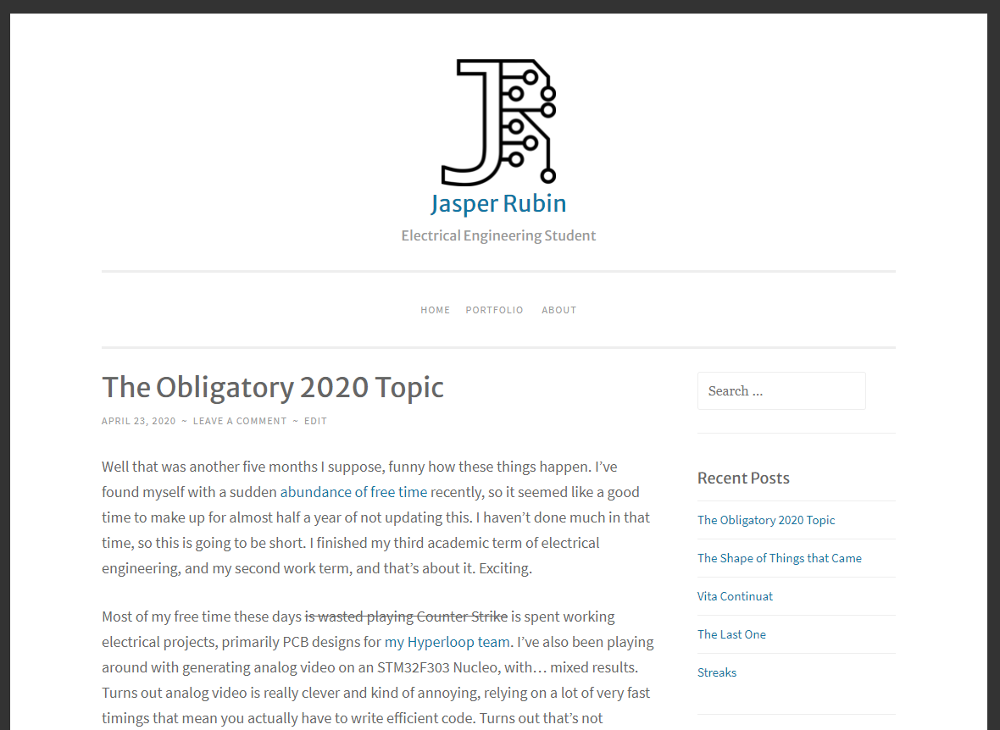

Blog
My blog started in 2015, when I was a misty-eyed high school freshman with dreams of being a game developer, as a tool to try and force me to work more on game design. It failed quite poorly at that, and quickly became a repository of me explaining that I was terrible at getting things done, and a few thousand words about Minecraft. Now it's where I write my thoughts on the world, when I find the time. I rarely do.
Writing
I write stuff sometimes. I tried for a summer to actually complete writing projects and failed, now they come and go as I have ideas, work on them for a week, then move on to new things. The small list of things I have finished can be viewed here, if you are so inclined.
Smithing

I have built and operated a series of small blacksmithing forges with friends. They have invariably met with unfortunate fates, between component failure (it turns out thrift store hairdryers don't take operation in direct sun and pouring rain too well) to collapse due to poor structural design, to one that burnt itself down.
Our next goal is to upgrade to propane, with the designs for the new forge done in our heads, and so far failing to be something we are actually capable of building.
Game Design
For many years my primary hobby was game development, with little success. My old game ideas file has about 20 entries, with most having been at least started at some point, invaribly with undue optimism. I used to compete in game jams (primarily Ludum Dare) back when I was in high school and had free weekends. I hope to someday get back into it, once I don't have as much calculus to contend with.